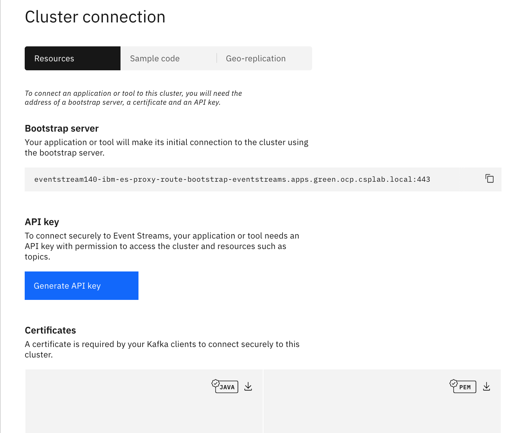
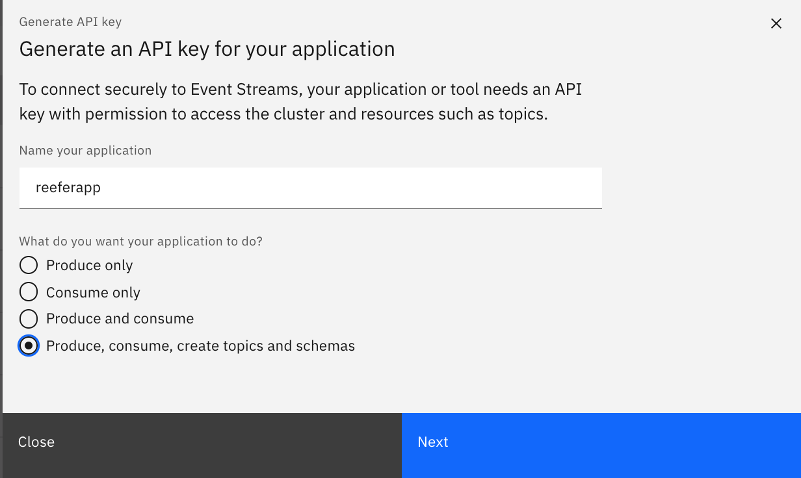

Event Streams provisioning and configuration
We cover a lot about Kafka or IBM Event Streams installation and configuration in the EDA reference architecture repository. In this short note we just highlight the steps to be done for deploying Event Streams on premise using Cloud Pak for integration.
Deploying Event Streams from Cloud Pak for Integration
The cloud pack for integration includes IBM Event Streams, the Kafka solution for on premise deployment.
Once you have an Openshift cluster, you can install cloud pak for integration as presented in this tutorial. Then you can deploy Event streams with the default configuration of three broker cluster from the CP4I home page:


For your own deployment you can follow the steps described in this tutorial and the Event Streams product documentation.
Once you have your instance up and running, you need to get the URL for the brokers, the API key to access topics and the TLS certificate.

Define the API key:


The copy the broker URL and api key in the scripts/setenv.sh file under the OCP choice:
OCP)
export KAFKA_BROKERS=eventstream140-ibm-es-proxy-route-bootstrap-eventstreams.apps.green.ocp.csplab.local:443
export KAFKA_APIKEY="zb5Rv-81m11A0_"
export KAFKA_CERT="/project/useapp/simulator/certs/ocp/es-cert.pem"
And then download the pem and java key. We keep those files in the certs/ocp folder.
As an alternate you can use Event Streams on Public Cloud.
Event Streams on IBM Cloud Public
We recommend creating the Event Stream service using the IBM Cloud catalog, you can also read our quick article on how to deploy Event Streams.
With IBM Cloud deployment use the service credentials to create new credentials to get the Kafka brokers list, the admin URL and the api key needed to authenticate the consumers and the producers.
For Event Streams on Openshift deployment, click to the connect to the cluster button to get the broker URL and to generate the API key: select the option to generate the key for all topics.

Defines topics
Create Kafka topics through Kubernetes Job automation
In an effort to keep development systems as clean as possible and speed up deployment of various scenarios, our deployment tasks have been encapsulated in Kubernetes Jobs. These are runnable on any Kubernetes platform, including OpenShift.
-
Following the configuration prerequisistes defined in the Backing Services documentation for using Kafka via IBM Event Streams on IBM Cloud or IBM Event Streams on OpenShift, you should already have the following Kubernetes ConfigMap & Secrets defined in your target namespace with the information available from the Connect to this service tab on the respective Event Streams service console:
- ConfigMap:
kafka-brokers(in a comma-separated list)kubectl create configmap kafka-brokers --from-literal=brokers='host1.appdomain.cloud.com,host2.appdomain.cloud.com,...'
- Secret:
eventstreams-apikeykubectl create secret generic eventstreams-apikey --from-literal=binding='1a2...9z0'
- Secret:
eventstreams-truststore-jks(this is only required when connecting to IBM Event Streams on OpenShift)kubectl create secret generic eventstreams-truststore-jks --from-file=~/Downloads/es-cert.jks - Event Streams Truststore password - this value is not contained in a Kubernetes Secret, but if using non-default settings in the Event Streams deployment, it should be verified that the password for the generated truststore file is still the default value of
password.
- ConfigMap:
-
Review the
/scripts/createKafkaTopics.yamland the fields contained in theenvsection for optional parameters that can be modified when running the Job for non-default tasks. -
Create the
create-kafka-topicsJob from the root of therefarch-reefer-mlrepository:kubectl apply -f scripts/createKafkaTopics.yaml
-
You can tail the created pod's output to see the progress of the Kafka topic creation:
kubectl logs -f --selector=job-name=create-kafka-topics
Create Kafka topics manually through offering UI
The following diagram illustrates the needed Kafka topics configured in IBM Cloud Event Stream service:

For the telemetries we are now using 3 replicas. This is an example of configuration for Event Streams on openshift on premise: